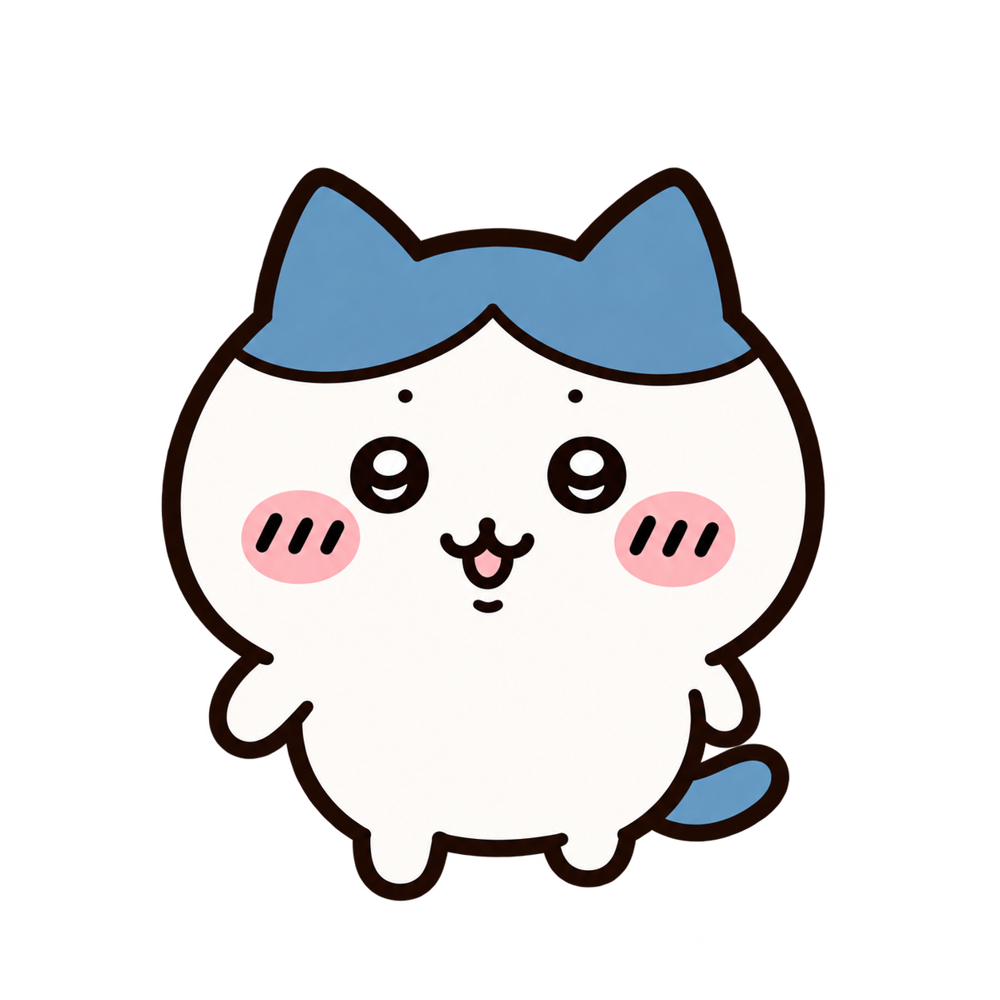

새로 제작한 정면 제자리 발동작 후보입니다. 공식 영상의 보행·타이밍 재현이 아니며 자연걷기 통과나 제품 적용을 뜻하지 않습니다. 기본 정지, 명시적 버튼으로만 재생합니다.

동일1254px 캔버스를 CSS196px로 표시. 실제 불투명 몸체 너비 약130px. 원본 픽셀/위치 관계 유지, 루트 이동 없음.
CSS translateY만 적용하여 각 키 alpha≥128 전체 하단을1130에 맞춤. 실제 지지발 판정이 아니며 머리가 최대 약2.97px 흔들릴 수 있음. 제품 권장값 아님.